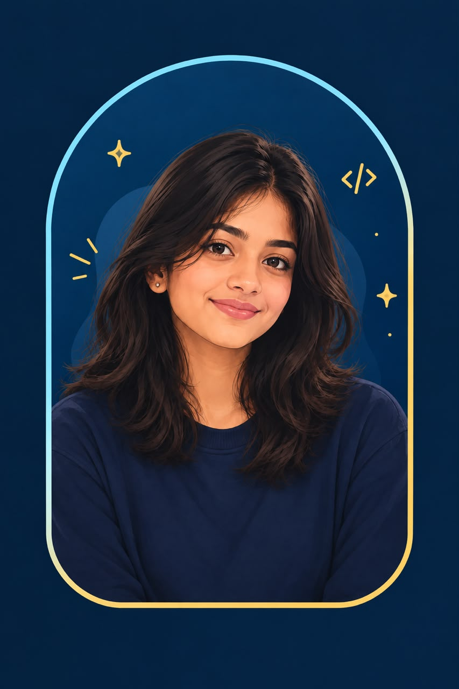

Tech in progress
Learning code one experiment, one challenge, and one bug at a time.
FIRST-YEAR CSE STUDENT · CURIOUS BY DEFAULT
I'm at the beginning of my tech journey, and that's the exciting part. I love learning by trying, turning little ideas into real projects, and making room for creativity along the way.
Currently learning. Always curious.

01 / THE PERSON BEHIND THE SCREEN
I'm not trying to know everything yet. I'm excited to learn something new every day.
I'm a first-year Computer Science student exploring web development, data science, and AI. I enjoy learning through hands-on projects and bringing a creative point of view to the things I make.
Learning code one experiment, one challenge, and one bug at a time.
Photography, reels, visual design, and noticing little details.
Collaborating, meeting people, organising events, and sharing ideas.
02 / THINGS I'M EXPLORING
A growing list, not a finished one. I'm still learning, and that's part of the fun.
I like understanding how things work, then experimenting until they make sense.
Currently building the basics
03 / MADE WHILE LEARNING
Every project is a chance to learn something I didn't know yesterday.
WEB DEVELOPMENT
A personal space to collect my work, share what I'm learning, and introduce the person behind the code.
Explore project ↗EXPERIMENT
Exploring new ideas and building confidence with every small experiment. Watch this space.
Coming as I learn ✦04 / THE JOURNEY SO FAR
THE BEGINNING
Learning programming basics and getting familiar with how websites are built.
RIGHT NOW
Creating projects, exploring tools, and learning by doing rather than waiting until I know everything.
WHAT'S NEXT
Taking on new challenges, meeting creative people, and turning curiosity into useful skills.
05 / BEYOND THE CODE
Because a good idea can come from anywhere, not just a screen.
Finding interesting frames, little moments, and stories in everyday things.
Playing with edits, pacing, and details that make a video feel right.
Exploring layouts, colours, and ways to make information engaging.
Meeting new people, sharing ideas, and bringing things together as a team.
06 / YOUR TURN
I'm open to learning, collaborating, and hearing about interesting projects.